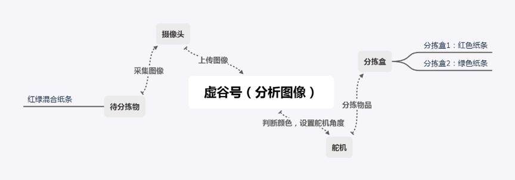

虚谷号使用手册
1.0
关于虚谷号
虚谷号的入门教程
虚谷号的基本操作
虚谷号的GPIO详解
虚谷号的软件介绍
虚谷号的教育应用
虚谷号的扩展硬件
虚谷号的高级操作
虚谷号的案例汇集
1. 虚谷号结合Yeelight做”变色龙“灯
2. 做一个颜值测试器
3. 语音控制特洛无人机
4. 做一个语音交互机器人“小胖”
5. 虚谷号让食盐在水中的扩散过程“可见”
6. 基于虚谷号的“传感与控制”实验
7. 会“吟诗作对”的机器人
8. 做一只不一样的“鹦鹉”
9. 在虚谷号上训练“石头剪刀布”模型
10. 根据颜色智能分拣的机器人
11. 自动语音播报系统
11.1. 原理分析
11.2. 核心代码
11.3. 功能测试
11.4. 参考资料
虚谷号的课程汇集
虚谷号使用手册
Docs
»
虚谷号的案例汇集
»
11. 自动语音播报系统
View page source
11. 自动语音播报系统
¶
案例提供：谢作如（温州）
11.1. 原理分析
¶

11.2. 核心代码
¶
11.3. 功能测试
¶
11.4. 参考资料
¶
https://blog.csdn.net/qq_42444944/article/details/89323039